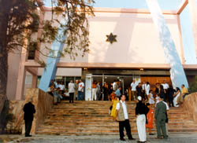
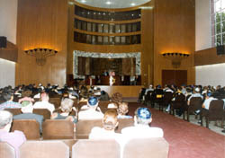
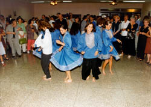

|
JUDIOS
CUBANOS CELEBRAN LA RENOVACION DEL CENTRO COMUNITARIO Este artículo se imprime
con el permiso de: Traducido por Joel Quezada LA HABANA - Muchos de los que se encontraban en la sinagoga principal de La Habana habían viajado horas para estar ahí. En autobuses atestados los cubanos vinieron desde Santiago, Camagüey y Santa Clara. En pequeñas avionetas fletadas llegaron americanos desde Baltimore, Nueva York y Washington. También llegaron los líderes judíos latinoamericanos desde Chile, Argentina y México. Todos fueron testigos de la llegada del Torán a la recién renovada Sinagoga del Patronato de La Habana donde hubo lágrimas de júbilo y muchas sonrisas. Por muchos años esto sólo fue un sueño; un sueño que ahora es una realidad. El Dr. José Miller, por muchos años líder de la comunidad judía en Cuba, con orgullo subió al púlpito y se dirigió a los líderes judíos cubanos, norteamericanos y latinoamericanos que encontraron el camino hasta La Habana para acudir a la ceremonia de renovación. "Amigos míos, esta sinagoga y centro comunitario fueron abiertos por primera vez en 1953. Mucho ha sucedido desde entonces. Este día representa un nuevo comienzo para el Patronato. Hoy celebramos no sólo la renovación de un edificio sino el revivir de una comunidad. Estamos felices de compartir este nuevo inicio con nuestros hermanos y hermanas judías de todas partes". La reconstrucción de la sinagoga y del centro comunitario es reconocida como un parteaguas de la historia judía en Cuba -historia que es rica y poco conocida en Occidente. Adele Dworin, la historiadora no-oficial de la comunidad judía en La Habana no paraba de sonreír. "Cuando yo era niña había una comunidad judía fuerte en La Habana. Luego todo se detuvo casi completamente. Hace diez años yo era la persona más joven que trabajaba en el Patronato -y no era una joven". "Hoy", nos dice riendo, "Soy una de las mayores. Mucha gente joven está regresando. ¿No es eso maravilloso?". En un tiempo, la comunidad judía de Cuba estaba entre las más prósperas en América Latina. Cuba era el anfitrión para grandes números de judíos americanos que visitaban la isla con regularidad hasta el grado de formar sociedades funerarias asegurándose lotes en el cementerio judío de La Habana. Las cosas cambiaron de pronto durante la Revolución de 1959 ya que casi el 90% de los judíos cubanos abandonaron su patria. La gran mayoría de los que permanecieron fueron asimilados casi en su totalidad. En 1992, a principios de la desintegración de al Unión Soviética, el Congreso Comunista de Cuba anunció que los cubanos podían involucrarse en religión y permanecer como buenos miembros del Partido Comunista. La eliminación del estigma de la identificación y expresión religiosa visible era un elemento crucial para crear un medio ambiente propicio para la renovación judía. El camino para el resurgimiento no ha sido fácil. Aunque se había creado la oportunidad para el resurgimiento por dos generaciones los judíos de Cuba habían sufrido de amnesia cultural. Había muy pocos recursos o conocimientos necesarios para la reedificación de la vida judía a nivel individual o comunitario. El Dr. Miller se puso en contacto con el
JDC en 1992 y solicitó ayuda para nutrir la chispa de vida judía
que unos cuantos mantenían viva. El JDC enriqueció los paquetes
de Pascua que eran admitidos en Cuba como ayuda religiosa. Los
paquetes, enviados desde el Congreso Judío Canadiense, contenían
matzot y otros artículos para la celebración de la Pascua.
Poco después el JDC comenzó a enviar medicinas y se abrió una
farmacia gratuita en el Patronato. Los doctores judíos comenzaron
a dar consultas y a entregar medicinas para cualquiera que se
acercara y que tuviera una necesidad médica verificable. Con
este programa y otros parecidos el pulso del Patronato comenzó
a latir más fuerte. Al iniciar su regreso, los judíos de La Habana se dieron cuenta que años de negligencia habían cobrado su cuota sobre el Patronato. El elaborado trabajo de madera del santuario principal estaba carcomido por termitas. El techo consistía de una serie de goteras y hoyos. Los pájaros hacían sus nidos en las vigas. Todo era un escenario de abandono. Y en medio de aquel abandono brillaba el alma de la comunidad. Grupos de mujeres se reunían en un rincón de un gran cuarto, clases para los niños en otro mientras el coro practicaba oraciones en el pasillo. El Rabino Shmuel Steinhenler, de origen argentino y quien acudió a la ceremonia de reedificación, recuerda que visitaba Cuba con regularidad en la década de 1990 para enseñar acerca de estudios judíos y guiar a la congregación en las oraciones. Aún entonces, el espíritu de los judíos cubanos era fuerte. "Cuando llegué por primera vez vi un póster hecho en casa que decía 'Am Yisrael B´Cuba Chai' [¡Viva la comunidad judía de Cuba!]. Me dije a mí mismo, esta es mi misión en Cuba. Ayudar a que esto se haga realidad". Por ocho años y a partir de 1992, se han abierto sinagogas y centros comunitarios en pueblos de toda Cuba. Se ha restablecido un lazo de identificación cultural y Cuba está tomando el lugar que le pertenece en la comunidad judía de Latino América. Cada verano, un campo judío en Cuba atrae a niños de Centro y Sur América. Este verano y por vez primera también acudirán niños de los Estados Unidos de América. Los judíos de Cuba participan ahora de manera comunitaria en una gama de programas de servicio social voluntario a través de sus sinagogas ayudando a los ancianos, proporcionando ayuda médica suplementaria, en clases de cultura hebrea y judía y ofreciendo cenas de Sabbath. "Cuando regreso a mi comunidad en casa", dice el Rabino Szteinhendler, "veo como es que luchamos para mantener a la gente dentro de la comunidad judía. Aquí, en Cuba, están luchando para unir a la comunidad judía. Lo que ha sucedido aquí es un mitzvah. Y sabes que todos los que ayudamos en realidad deberíamos estar agradecidos con los judíos cubanos por permitirnos llevar a cabo este mitzvah. Porque un mitzvah es una bendición para quien lo lleva a cabo". Al inicio de la ceremonia de reedificación, el Dr. Miller clavó la mezuzah junto a la puerta de la sinagoga e incluyó la oración. Luego, mientras la gente llenaba el santuario para los servicios religiosos, un desfile de mano, viejas y jóvenes, se alargaban para tocar la ligeramente oscura madera de la mezuzah, un símbolo de su pasado común y el futuro que juntos construyen. Derechos de Autor: The
American Jewish Joint Distribution Committee, Inc., 2000.
|